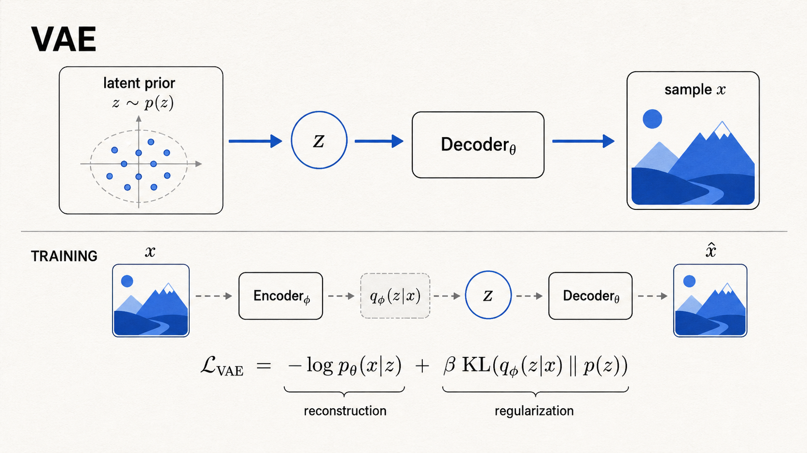
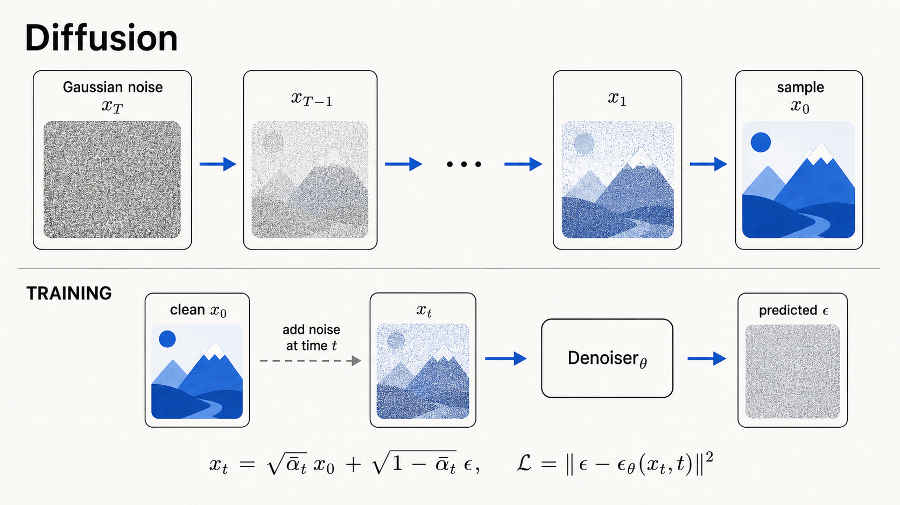
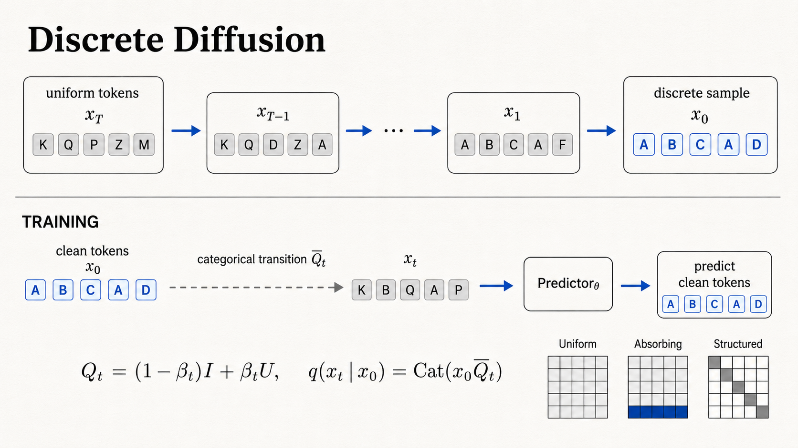
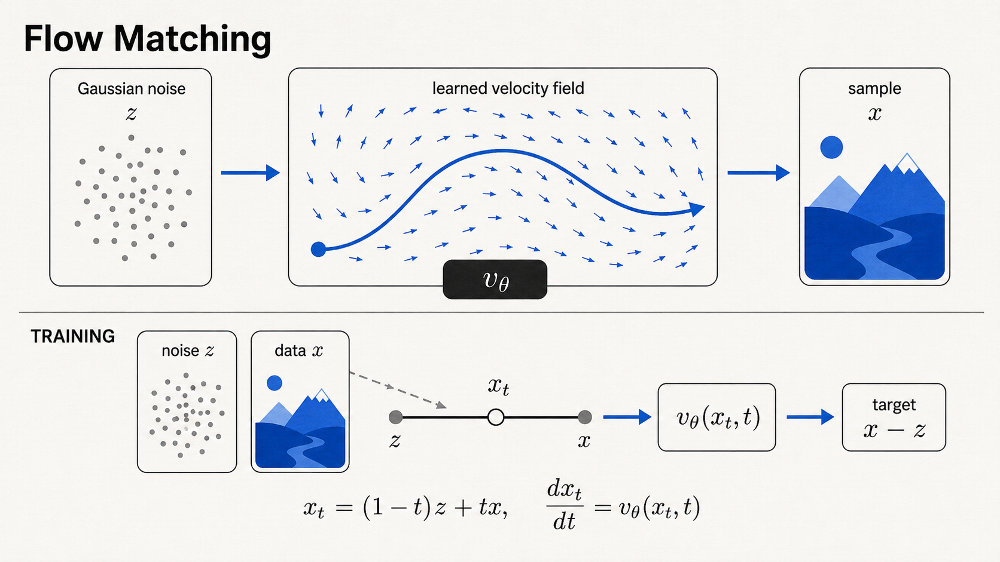

VAE · latent model
01
VAE
CHU-ZP / Modular-Vae
Learn a compact posterior and decode prior samples. Compare MLP, CNN, Transformer, beta-VAE, and a learned flow prior.
A hands-on research collection
Four focused PyTorch repositories that move from compact latent variables to continuous probability flows—without hiding the mathematics behind a framework.
z ∼ qφ(z|x)
xₜ → x₀
dx/dt = vθ(x,t)
latent space → reverse process → vector field
The collection
Each repository isolates a different generative mechanism while keeping models, objectives, and samplers small enough to trace.

VAE · latent modelCHU-ZP / Modular-Vae
Learn a compact posterior and decode prior samples. Compare MLP, CNN, Transformer, beta-VAE, and a learned flow prior.

Diffusion · denoisingCHU-ZP / Modular-Diffusion
Compose pixel- and latent-space diffusion by swapping the denoiser, schedule, prediction target, and DDPM/DDIM sampler.

Discrete · categoricalCHU-ZP / Discrete-Diffusion
Keep diffusion categorical from end to end, across quantized MNIST pixels and binary ModelNet10 voxel grids.

Flow · velocity fieldCHU-ZP / FlowMatching
Learn a Rectified Flow velocity field and integrate it from Gaussian noise with an Euler or Heun ODE solver.
Shared perspective
The implementations differ in state space and generation dynamics, but share one principle: expose the probabilistic mechanism in code.
Built to learn by opening the black box.